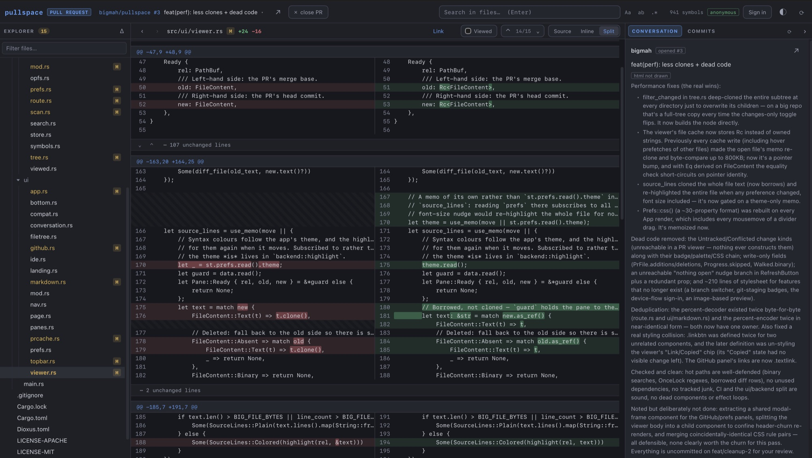

AI agents have made it much easier to write complicated code. Not long ago the ceiling was roughly what you could pull off with a clever macro. Now a sweeping refactor or rewrite is close to trivial.
That's great. We can take on more ambitious work and reach for the fruit at the top of the tree.
Some software has no real consequences when it breaks. For that, fire the slop cannon and move on. If it breaks, another prompt will fix it, and that's fine.
Some software does matter. Money is on the line, sometimes lives. Whoever ships it is responsible for what it does, and serious code still has to be understood by the person responsible for it.
That creates a new bottleneck on dev teams. Writing code used to be the slow part, so the PR queue never backed up. "You can read code much faster than you can write it" sounds almost silly now; it has flipped completely. Understanding what's about to ship, which is code review, is the bottleneck. Everything else is a rounding error.
Code review isn't going anywhere. So it should be good.
That bottleneck is what pullspace is about. It does two things:
- Better ergonomics for reading GitHub changes in the browser.
- AI summaries that don't miss the forest for the trees, tracked in git next to the code they describe.
1A buttery browser UX for review
Most of us end up with the same workflow: a million GitHub tabs. To review a change you click Files changed, wait for a slow API call, then scroll down one long list of diffs. It's clunky. The VS Code-in-the-browser integration is clunkier still.
You can check the branch out locally, but then you have to deal with your own uncommitted changes, stashes and worktrees, and repeat it for every PR you want to look at.
pullspace is an IDE-style code reviewer written entirely in Rust (Dioxus) and compiled to WASM. It's a static page with no server. Your browser talks to api.github.com directly, and the source code never leaves the tab.

Cloning, in a browser tab
Opening a PR starts with a snapshot: one request reads the commit's whole git tree, which is every file path with its blob SHA. Then pullspace fetches the blobs it doesn't have, starting with the PR's changed files and pulling twelve at a time. It tries raw.githubusercontent.com first, which is unmetered and needs no token, and falls back to the API for private repos.
The bytes are stored in the browser's Origin Private File System, keyed by git blob SHA, just like git's own object store. So the second PR you open on a repo only downloads the files that actually differ, and it opens almost instantly. Search, the symbol index and goto definition all read from that same local store.
Why not a real git clone? GitHub's smart-HTTP and codeload endpoints refuse cross-origin requests, so a browser can't speak the git protocol to them. A content-addressed store fed from the tree API gets you most of the benefit anyway.
What you get
- Many reviews, one tabOpen several PRs, branches or compares as spaces in one browser tab and switch between them without losing your place.
- IDE navigationFile tree, go to file
⌘P, symbol in repo⌘T, goto definition, references, back/forward⌘[⌘]. - SearchFind in file
⌘Fand search the whole repo⌘⇧F, all running locally. - Real diffsInline or side by side, viewed-file checkmarks, and collapsed unchanged lines you can open back up.
- Review from the diffComment on lines, reply to threads, hold comments, and submit an approve or request-changes, the same as github.com.
- No sign-inPublic repos just work. For private ones, paste a fine-grained PAT. It stays in your browser.
Links that mean something
Every view has a URL you can send to someone. The routes mirror GitHub's own, behind the # so the static host never sees them:
pullspace.dev/#/owner/repo/pull/123
pullspace.dev/#/owner/repo/pull/123/files/src/main.rs:L42
pullspace.dev/#/owner/repo/tree/my-branch
pullspace.dev/#/owner/repo/compare/main...my-branch
pullspace.dev/#/owner/repo/commit/<sha>You can also paste any github.com URL into pullspace. The repo includes a small Chrome extension that does it in one keystroke: on any GitHub page, Alt+Shift+P opens the same thing in pullspace, in your existing pullspace tab if you have one open.
2Summaries that live in the repo
AI code review already exists, and it's useful for mechanical things like logic errors, off-by-ones and index ranges. But it tends to be noisy, and it's weak on what a reviewer most needs to know: what is this change for, how does it fit the system, and what does it quietly make untrue?
The better approach, which a lot of us already use, is to check the PR's branch out locally and ask your own agent to review it. That agent has far more context. It can read the repo's markdown, it remembers earlier sessions, and it treats the repo as a whole system, a tree of files with a structure, rather than a pile of hunks to analyze one at a time.
This is clearly where things are headed. We still have to understand the code, but we hand the mechanical part of getting there to an agent, the same way we used one to write the code.
It isn't quite there yet, though. Those reviews are one-off queries. The explanation the agent produced vanishes when the terminal closes, and the next reviewer starts from scratch.
pullspace makes the agent's explanation a file. It's committed and versioned, and it gets diffed like code.
The .pullspace/ directory
Everything lives in a directory committed alongside the code:
seed.md is a short steering prompt you edit freely. It says who reads these pages, what matters most in this codebase, the vocabulary, and what to skip. The agent reads it before every run. Here's part of pullspace's own:
## What matters most here
- pullspace is a **static page**: Rust compiled to wasm, calling api.github.com
straight from the browser. There is no server.
- **The security boundary**: a GitHub token sits in localStorage, and every
file shown is untrusted. Say where each of those lines is drawn.
- **Panics are fatal** in wasm (the tab stops). The recurring traps: ...
## Skip
`extension/icons`, `demo`, `deploy`, `.github`, `dist`, `target`.The map has one static HTML page per important directory, mirroring the source tree. Each page explains its directory's purpose, how it works, its invariants and its gotchas, with links into the code at specific lines. Pages link to each other, so you can walk down the tree.
The guide is one page per PR, written by the agent that made the change: why it exists, the order to read the diff in, the decisions made, the risks, and what was and wasn't checked. It's the PR description you always wanted and rarely got.
Freshness costs nothing to track
The obvious problem with docs is that they go stale. The trick is that git already knows exactly when a directory changed. Every map page carries a stamp:
<meta name="pullspace:tree" content="8364bad9f7cd6074f02aceb897c3cb655207b307">
$ git rev-parse HEAD:src/backend
8364bad9f7cd6074f02aceb897c3cb655207b307 # same hash → page is currentThat's the git tree hash of the directory when the page was written. It changes exactly when anything underneath it changes, so comparing the stamp with the current hash tells you whether the page is current. No database, cache or service is involved. If they differ, git diff <stamp> HEAD:src/backend shows exactly what moved since the page was written, and the agent uses that same diff to update the page.
In pullspace, each page shows a current or out of date pill, with a list of the files that changed since. If a PR changes code under a page without touching the page, pullspace flags it, and that's usually the first thing to ask the author about.
3How it flows through a PR
Here's the loop. On your feature branch you write code as usual, with or without an agent. Before opening the PR you run /pullspace-change. The agent reads the branch's diff, rewrites only the map pages whose explanation the change makes untrue, and writes .pullspace/changes/<branch>.html. Those are committed on the branch like any other file.
When you open the PR in pullspace, it opens on the guide. Each map page the PR rewrote gets a Before / Both / After toggle: passages only in the new version are highlighted green, passages only in the old one red. You're no longer just reviewing which lines changed. You're reviewing how the explanation of the system changed. Try the toggle:
How it works
There is no server. The only way out of the tab is http.rs, a thin wrapper over the browser's fetch. github.rs sits on top: a REST client for pull requests, commits, compares, branches, comments and checks.
pullspace only ever reads from GitHub; nothing in this directory sends a write, so a read-only token is all it needs.
The four writes (a discussion comment, a reply to a line thread, a single line comment, and a review with its line comments) are each one JSON POST through post_json, which refuses to go out without a token and turns a refusal into GitHub's own words with write_error.
Opening a workspace starts with a snapshot: repo_tree reads the commit's whole tree in one request…
feat/writes PR rewrote when it added commenting and reviews. A reviewer sees right away that the "read-only" assumption is gone.What happens to the guide after merge?
It merges with the rest of the branch. Guides are named after their branch, so two PRs never touch the same file and never conflict. Over time .pullspace/changes/ on main builds up a reviewer's guide for every PR, sitting next to the code it explains and searchable with git log. Six months later, "why is it like this?" has an answer in the repo.
Map pages merge like any other file. A PR only rewrites the pages it makes untrue, and it deliberately leaves the parent pages alone even though their stamps go stale. They show as out of date until someone runs /pullspace-map on main again, which is accurate. Run it weekly or after a big merge, and since current pages are skipped by hash, it only redoes what actually moved.
4Using it on your repo
Just reviewing? Go to pullspace.dev and paste a PR URL. That's it for public repos. For private ones, paste a GitHub token that can read the repo (to comment and approve from pullspace, a fine-grained token also needs Pull requests: Read and write).
Want summaries? The agent side is two skills: plain directories with a SKILL.md, the format Claude Code and other agent harnesses load. You don't need a service, an API key or a build step.
1. Install the skills
mkdir -p .claude/skills
curl -sL https://github.com/bigmah/pullspace/archive/refs/heads/main.tar.gz \
| tar -xz --strip-components=2 -C .claude/skills pullspace-main/skillsThat gives you pullspace-map and pullspace-change. Commit them so the whole team, and their agents, use the same ones. If your harness doesn't load skills, tell the agent: "Read .claude/skills/pullspace-map/SKILL.md and follow it."
2. Build the map, once
> /pullspace-mapOn the first run the agent writes seed.md and asks you a few questions about your codebase. Then it writes one page per important directory, bottom-up, stamps each one, and checks every link. Review the pages the way you'd review docs, then commit .pullspace/.
3. Before every PR
> /pullspace-changeThis writes the guide and updates the map pages the branch affects. Commit them with the branch.
4. Review it in pullspace
Open the PR. It opens on the guide. The ◈ in the explorer header goes to the map, and directories with a page show a ◈ on their row. Links in a page open the file at the linked line.
The scripts
The skills lean on a few small shell scripts that only need git, sh and awk, and you can run them yourself:
| script | tells you |
|---|---|
plan.sh | Every page's status (current, stale, unstamped, orphan), then the directories with no page, biggest first. |
stamp.sh <dir> | The stamp for a directory, from the working tree, the index or HEAD. |
check.sh | Anything a page does that the format or sandbox forbids, broken links, and line anchors past the end of a file. |
affected.sh [base] | Which pages a branch's changes fall under. |
Pages can't do anything
A summary is someone else's HTML, rendered next to your GitHub token, so it's treated as hostile. Pages bring no CSS or script of their own (pullspace styles them to match its theme). They render in a sandboxed frame with an opaque origin, under a CSP that blocks every script, event handler and network request. The only script in the frame is pullspace's: a link bridge and the before/after highlighter. Markdown elsewhere in the app is parsed into pullspace's own elements and never handed to the browser as markup.
Where this goes
Agents write the code, and humans are still responsible for it. The gap between those two is understanding, and right now we close it by hand in a hundred browser tabs, with explanations that disappear when the chat closes.
pullspace's bet is that the review tool should be as good as your editor, and that the agent's understanding of the code belongs in the repo: versioned, diffed and reviewed like everything else.
It's open source and dual licensed under MIT and Apache-2.0. Try it on a PR you have open right now at pullspace.dev, or open pullspace's own repo in it to browse its map. Issues and PRs are welcome on GitHub.